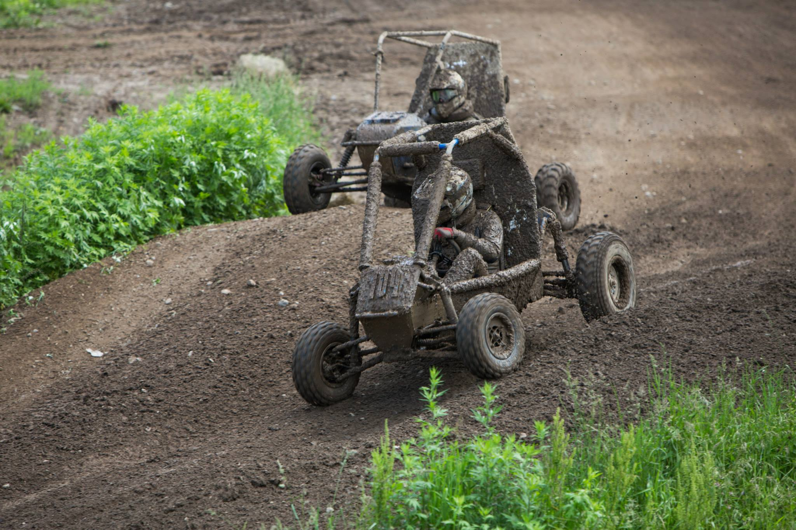

Olin Baja is a large project team at Olin that builds an off-road racing vehicle to compete in Society of Automotive Engineers (SAE) collegiate MiniBaja competitions across the US. I'm in a leadership role, in charge of fixing/maintaining our car from last year and hosting 'drive days' while we build the new one to get people excited about Baja. I also am one of the three team welders, and spend hours in the shop welding our new car or fixing the old one.
This year, I've been leading a rebranding effort, to allow for effective and consistent visual communication for our team. So far, we have redesigned our team logo, decided on consistent fonts, and comprised a color scheme. We are currently in the process of creating a brand manual that outlines the visual appearance we wish to communicate.
Moreover, I've been working on the software subsystem to create a new website, keeping the new design practices in mind. This includes paper prototyping and coding the new site, using Node.js, Angular, and MongoDB.